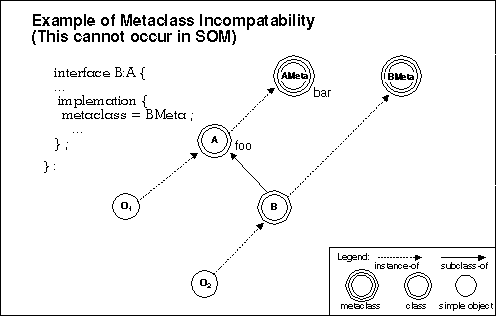
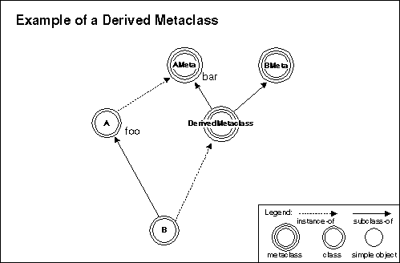
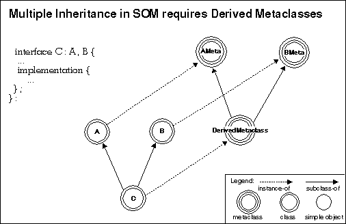

As previously discussed, a class object can perform any of the class methods that its metaclass defines. New metaclasses are typically created to modify existing class methods or introduce new class method(s). Chapter 8, "Metaclass Framework," discusses metaclass programming.
Three factors are essential for effective use of metaclasses in SOM:
Surprisingly, SOM is currently the only OOP system that can make this final guarantee while also allowing programmers to explicitly define and use named metaclasses. This is possible because SOM automatically determines an appropriate metaclass that supports this guarantee, automatically deriving new metaclasses by subclassing at run time when this is necessary. As an example, suppose class "A" is an instance of metaclass "AMeta".
Assume that "AMeta" supports a method "bar" and that "A" supports a method "foo" that uses the expression "_bar( _somGetClass(somSelf ) )." That is, method "foo" invokes "bar" on the class of the object on which "foo" is invoked. For example, when method "foo" is invoked on an instance of class "A" (say, object "O{1}"), this in turn invokes "bar" on class "A" itself.
Now consider what happens if class "A" were subclassed by "B," a class that has the explicit metaclass "BMeta" declared in its SOM IDL source file (and assuming "BMeta" is not derived from "AMeta"). Also assume that object "O{2}" is an instance of class "B."
Recall that "AMeta" supports method "bar" and that class "A" supports method
"foo" (which incorporates "bar" in its definition). Given the hierarchy
described above, an invocation of "foo" on "O {2}" would fail, because metaclass
"BMeta" does not support the "bar" method. ExampleofMetaclassIncompatibility

There is only one way that "BMeta" can support this specific method-by inheriting it from "AMeta" ("BMeta" could introduce another method named "bar", but this would be a different method from the one introduced by "AMeta"). Therefore, in this example, because "BMeta" is not a subclass of "AMeta", "BMeta" cannot be allowed to be the metaclass of "B". That is, "BMeta" is not compatible with the requirements placed on "B" by the fundamental principle of OOP referred to above. This situation is referred to as metaclass incompatibility.
SOM does not allow hierarchies with metaclass incompatibilities. Instead,
SOM automatically builds derived metaclasses when this is necessary.
For example, SOM would create a "DerivedMeta" metaclass that has both "AMeta"
and "BMeta" as parents. This ensures that the invocation of method "foo"
on instances of class "B" will not fail, and also ensures that the desired
class methods provided by "BMeta" will be available on class "B".
Example of a Derived Metaclass

There are three important aspects of SOM's approach to derived metaclasses:
As further explanation for the automatic derivation of metaclasses, consider
the following multiple-inheritance example. Class "C" (derived from classes
"A" and "B") does not have an explicit metaclass declaration in its SOM
IDL, yet its parents "A" and "B" do. As a result, class "C" requires a derived
metaclass. (If you still have trouble following the reasoning behind derived
metaclasses, ask yourself the following question: What class should "C"
be an instance of? After a bit of reflection, you will conclude that, if
SOM did not build the derived metaclass, you would have to do so yourself.)
MultipleInheritancerequiresDerivedMetaclasses

In summary, SOM allows and encourages the definition and explicit use of named metaclasses. With named metaclasses, programmers can not only affect the behavior of class instances by choosing the parents of classes, but they can also affect the behavior of the classes themselves by choosing their metaclasses. Because the behavior of classes in SOM includes the implementation of inheritance itself, metaclasses in SOM provide an extremely flexible and powerful capability allowing classes to package solutions to problems that are otherwise very difficult to address within an OOP context.
At the same time, SOM is unique in that it relieves programmers of the responsibility for avoiding metaclass incompatibility when defining a new class. At first glance, this might seem to be merely a useful (though very important) convenience. But, in fact, it is absolutely essential, because SOM is predicated on binary compatibility with respect to changes in class implementations.
A programmer might, at one point in time, know the metaclasses of all ancestor classes of a new subclass, and, as a result, be able to explicitly derive an appropriate metaclass for the new class. Nevertheless, SOM must guarantee that this new class will still execute and perform correctly when any of its ancestor class's implementations are changed (which could even include specifying different metaclasses). Derived metaclasses allow SOM to make this guarantee. A SOM programmer need never worry about the problem of metaclass incompatibility; SOM does this for the programmer. Instead, explicit metaclasses can simply be used to "add in" whatever behavior is desired for a new class. SOM automatically handles anything else that is needed. Chapter 10 provides useful examples of such metaclasses. A SOM programmer should find numerous applications for the techniques that are illustrated there.